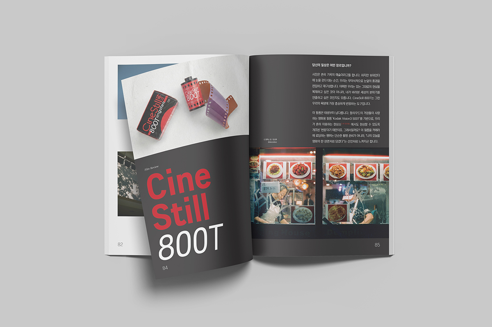
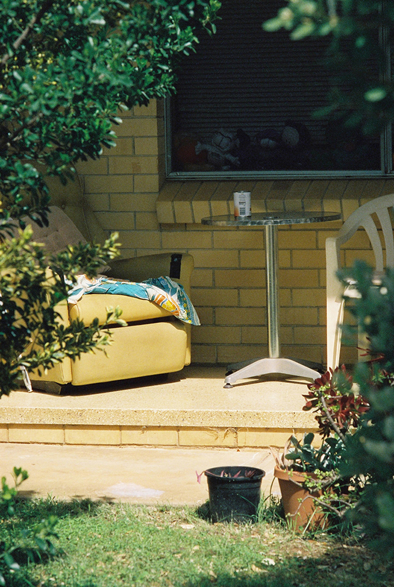

"필름은 시각적인 온도로 답했습니다. 붉은 빛 무리 속에서 누군가의 방은 고독한 모노드라마가 되었고, 누군가의 거리는 활기찬 시트콤이 되었습니다."
창간호 이후 1년. 마침내 종이 위에 새겨진 5ft magazine의 두 번째 이야기. 이번 호에서는 한 롤의 필름이 평범한 일상을 어떻게 영화의 한 장면으로 바꾸어 놓는지 — 그 변화의 순간을 담았다. 두 번째 호에 무엇이 담겼는지 살짝 들여다본다.
이번 호의 주제 — 당신의 공간은 어떤 장르인가요?
매거진의 표지에 적힌 한 줄, "당신의 공간은 어떤 장르인가요?". 두 번째 호의 모든 사진과 글이 이 질문 아래 모였다. 익숙한 풍경이 한순간 영화의 한 장면으로 변하는 순간, 그 시각적인 온도를 다양한 시선으로 풀어낸 것이 이번 호의 핵심이다.
이번 호에 사용된 필름은 Cinestill 800T. 할리우드의 거장들이 사랑하는 영화용 필름 Kodak Vision3 500T를 일반 현상소(C-41)에서도 처리할 수 있도록 개조한 변종이다. 텅스텐 조명 아래에서는 푸른 균형을 잡고, 강렬한 빛을 만나면 붉은 할레이션(Halation)을 피워낸다. 뷰파인더 속 세상을 평범한 현실 너머의 장면으로 뒤바꾸는 필름.
세 명의 사진가, 세 개의 장르
이번 호에는 세 명의 사진작가, 그리고 한 명의 글 작가, 한 명의 인터뷰이, 한 명의 일러스트 작가가 함께했다. 각자의 공간을 영화 장르에 빗대어 풀어낸 그들의 답을 따라가 본다.
여섯 명, 각기 다른 장르. 같은 필름 한 롤이 어떻게 이렇게 다른 풍경을 펼쳐낼 수 있는지는 책장을 한 장씩 넘기면서 직접 확인해주시길.

본문 펼침면 미리보기
매거진 안쪽에 담긴 세 작가의 사진을 살짝 공개한다. 같은 필름으로 찍었지만 전혀 다른 장르의 미장센을 가진 사진들이다.

장형수 작가는 매거진에서 이렇게 적었다. "제 공간의 장르는 한 편의 영화라기보다는, 모든 영화일 수도 있을 것 같습니다. 모든 영화의 미장센이 제 공간의 장르일 수도 있을 것 같아요." 잘 찍힌 한 컷이 아니라, 이야기가 멈춰 있는 장면들. 빛은 조명처럼 의도를 가지고 놓이고, 공간과 사물은 말없이 상황을 설명한다.
노애경 작가는 드러나지 않는 인물, 숨은 서사, 공간의 공기를 담는다. "제 공간은 어딘가 분주하고 혼란스럽고, 제멋대로이면서도 공상적이기에 디스토피아 판타지에 가깝다고 생각합니다." 정확한 의미는 모호하지만, 그 여백에서 상상이 시작되는 — 조용히 끓어오르는 장면들.
박순렬 작가의 시선은 도시의 작은 풍경에 머문다. 낡은 의자, 비닐을 대충 덮어둔 자동차, 나뭇가지에 걸린 비닐. "화려하진 않지만, 어딘가 좀 쓸쓸하고 조용한 풍경들. 영화로 치면 주인공은 안 나오고 배경만 계속 나오는, 조금 심심한 독립영화 쯤 되지 않을까 싶습니다." 남들은 그냥 지나치지만 자신의 눈에만 밟히는 것들.
거리에서 발견한 일상의 특별함
이번 호의 또 다른 큰 축은 인터뷰다. 일본 가마쿠라와 도쿄를 무대로 약 20년째 거리를 사진에 담고 있는 작가 신 노구치(Shin Noguchi). 그는 마크 트웨인의 "진실은 언제나 허구보다 더 낯설다"를 사진 철학으로 삼는다. 5ft magazine은 그를 만나, 거리에서 셔터를 누르는 마음과 일상 속 비일상의 순간들에 대해 긴 대화를 나눴다.
그의 작품은 가디언(The Guardian), 월스트리트 저널(The Wall Street Journal) 등 국제 매체에 소개되었으며, 에르메스(Hermès)와 애플(Apple)의 클라이언트 작업, 라이카 M 70주년 캠페인 'M is M' 선정 등 — 전 세계가 주목하는 스트리트 포토그래퍼다.
그레인은 노이즈가 아니다
이번 호에는 또 하나의 특별한 코너가 있다. Film Social Club이 직접 큐레이션한 〈필름으로 기록된 10편의 시네마〉. 〈캐롤〉의 서늘한 겨울 공기부터 〈플로리다 프로젝트〉의 끓어오르는 여름 햇살, 〈중경삼림〉의 텅스텐 야경, 그리고 〈오펜하이머〉의 묵직한 흑백 IMAX 필름까지. 거장들이 빛을 다루는 방식을 당신의 뷰파인더 안으로 가져올 10가지 영화의 기록이다.
Vol.02 콘텐츠 한눈에
- ● Photo — 장형수, 노애경, 박순렬
- ● Essay — 김현아 〈멍청한 생각이 반복될 때〉 · 〈일상물 같길 바라는 30대 연애〉
- ● Interview — 신 노구치 작가
- ● Camera Review — Voigtländer Vitessa 500 AE (앨리카메라 강혜원)
- ● Film Review — Cinestill 800T (Film Social Club)
- ● Feature — 그레인은 노이즈가 아니다, 필름으로 기록된 10편의 시네마 (Film Social Club)
- ● Illustrator Story — 명수경 〈집콕〉, 〈디지털 사진만 찍던 A씨의 사연〉
다음 호 예고
차가운 도시 속 따뜻한 시선
유튜버 사작쿄, 남교현 작가와의 인터뷰가 준비됩니다.
Vol.03은 Kodak T-Max 400으로 함께한다. 모든 색이 사라진 뒤에야 비로소 보이는 선명함. 카메라 리뷰에서는 Leica Barnack IIIf의 낭만과 불편의 미학을, 인터뷰에서는 차가운 도시 속 따뜻한 시선을 담아내는 포토그래퍼이자 유튜버 사작쿄(남교현)를 만난다.
같은 필름, 다른 사람, 다른 장르. 그게 우리가 매 호마다 약속하는 것이다. 5ft magazine은 혼자 만족하는 사진이 아니라, 더 많은 이들과 함께 뜻을 모아 만들어 가는 상생의 매거진을 꿈꾼다.
지금 바로 만나보세요
네이버 스마트스토어에서 실물 인쇄본을 만날 수 있습니다.